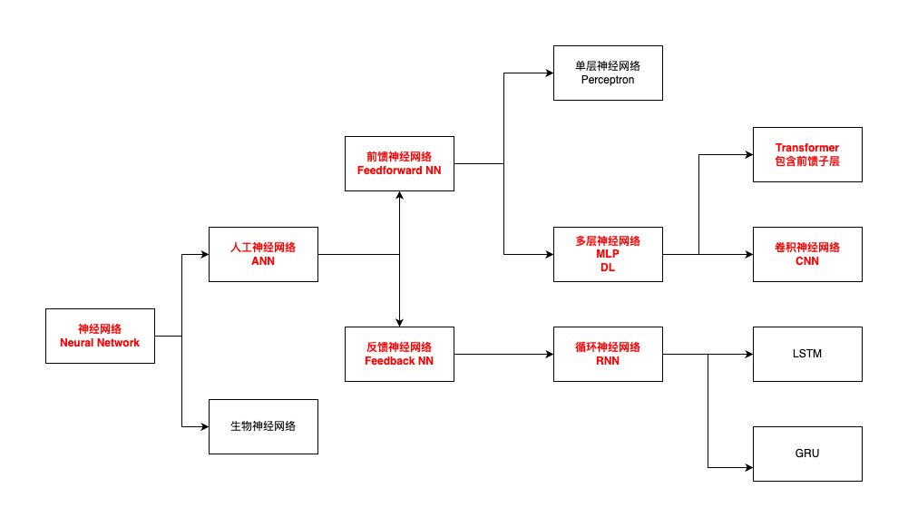
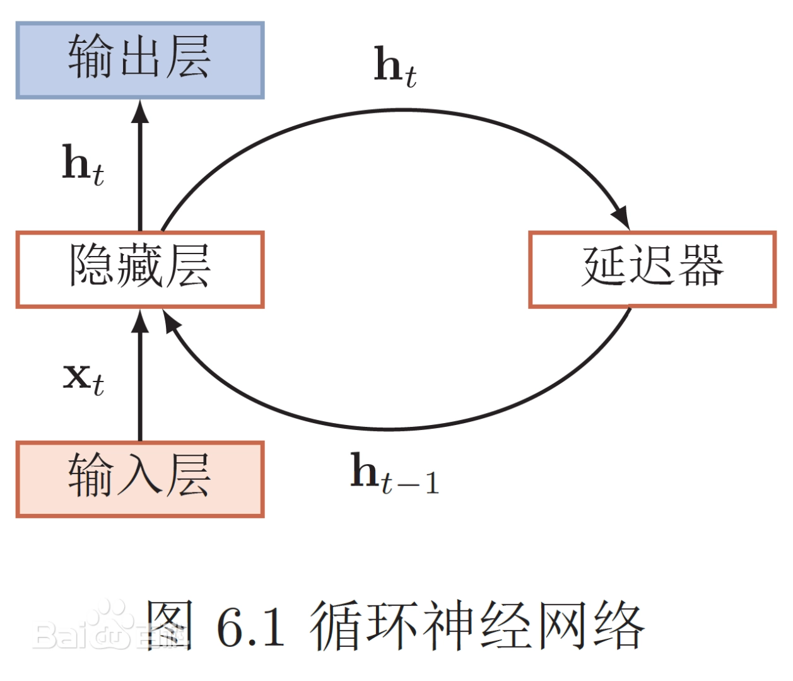
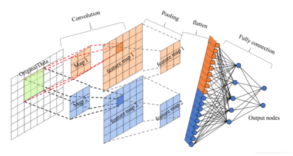
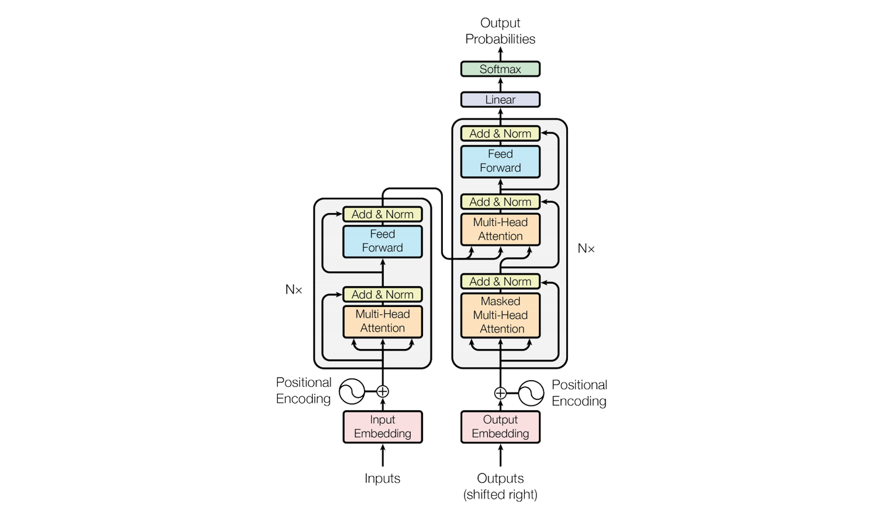
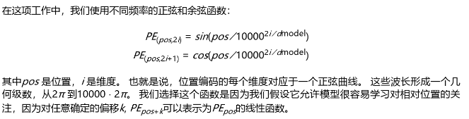
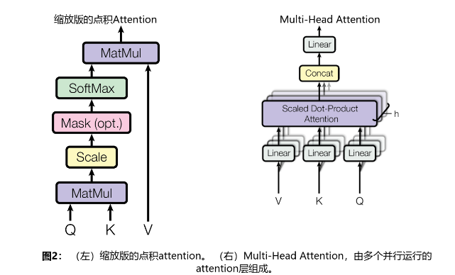
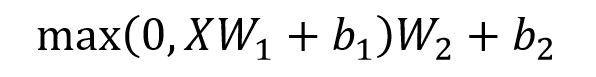

前言
大模型技术方兴未艾，随着GPT、DeepSeek、Qwen3等一系列模型的先后推出，大模型正推动着人工智能走向一个新的高度。作为新进这个领域的小白，必须从头学习相关技术理论，理解基础概念，才能像搭积木一样，步步为营，使用好这门技术。
神经网络
神经网络是深度学习的基础组件，初识机器学习一节中，就神经网络的基本组成单元单层感知器（M-P神经元模型）做了简单的介绍，并根据数据的流转，简单分成了前馈神经网络和反馈神经网络两个类别。

下面就几个典型的神经网络的概念加以说明。
前馈神经网络
英文全称：Feedforward Neural Network，英文简称：FNN。
典型模型：多层感知器（MLP）、CNN。
常见用途：分类或者回归，图像分类、语音识别、结构化数据预测。
优缺分析：结构简单，易于实现和训练，无法处理时序依赖的数据。
示意图：输入层 -> 隐藏层 -> 输出层。数据从输入层开始，逐层前传到输出层，没有回环。
反馈神经网络
英文全称：Feedback Neural Network。
典型模型：RNN、Hopfield 网络、自组织映射网络（Self-Organizing Map，SOM）。
常见用途：联想记忆。
优缺分析：训练复杂，容易陷入具备最优，具备自组织自适应能力，不适合大规模深度学习训练。
示意图：输入层 -> 隐藏层（有环） -> 输出层（有环）。包含从输出层或中间层返回到前面层的连接，有“环”。
循环神经网络
英文全称：Recurrent Neural Network，英文简称：RNN。
典型模型：长短期记忆网络（LSTM）、门控循环单元（GRU）。
常见用途：时间序列、自然语言处理、音频建模。
优缺分析：能够处理序列中的时间依赖关系，训练过程中可能会出现梯度爆炸或者消失的问题。
示意图：
t0: x0 → h0
t1: x1 + h0 → h1
t2: x2 + h1 → h2

卷积神经网络
英文全称：Convolutional Neural Network，英文简称：CNN。
典型模型：LeNet、AlexNet、VGG、ResNet等。
常见用途：图像识别、目标检测、视频分析。
优缺分析：强大的图像处理能力，参数共享，计算效率高，适合处理高维数据；对时间序列数据处理能力有限。
示意图：输入图片 -> 卷积层提取局部特征 -> 池化降维 -> 全连接 -> 输出。

Transfomer
Transformer由论文《Attension is All Your Need》提出，是大模型的核心架构；上升势头强劲，正朝着垂直领域（专业化模型）和通用领域（GAI通用人工智能）渗透。
典型模型：GPT、DeepSeek、Qwen等。
常见用途：自然语言处理（NLP）、计算机视觉（CV）、音频处理、代码生成、多模态。
优缺点分析：很强的通用性、扩展性、迁移学习效果好，自注意力机制，可以很好的处理依赖，并进行并行计算；对计算资源需求高，训练成本大，理解难度高。
Attension is All Your Need

核心概念
从这幅经典的Transformer架构图中，可以看出整个过程分为Encode（左边部分）和Decode（右边部分）。可以看到在这两部分的处理过程中，Embedding、Positional Encoding、Multi-Head Attension、Add & Norm多次被使用到。
Attention Is All You Need 中文翻译.pdf
Embedding
在NLP中，embedding（词嵌入）是将输入转换为向量矩阵，即为：将句子中的每个词或者词组，转化为带有Feature的向量（维度d=512），这些维度代表了词或者词组的不同的含义，这样整个句子就会变成一个矩阵（其中行代表有多少个词或词组，列则代表每个字或者词组的Feature）。例如可以通过对向量计算，得出两个向量之间的远近关系。文本转向量有多种方式，例如可以采用 Word2Vec、Glove 等算法预训练得到，也可以在 Transformer 中训练得到。
Positional Encoding
Embedding只对词的Feature做了表示，在NLP中，例如翻译，词与词的位置同样很关键，相同的词，不同的顺序出现，会代表不同的含义。在Transformer中，因为没有采取RNN和CNN的结构，无法利用顺序信息，因此必须有一种方式来代表位置信息。Transformer中采取了一种PE来标识。

*Embedding（词嵌入）+ Positional Encoding（位置编码）= Tranformer的输入X（一个nd的矩阵，其中n代表词的个数，d代表每个词的Feature向量）。**
Multi-Head Attension

多头注意力是由多个自注意力机制组成的。这幅图中的左边代表放大版的自注意力机制的结构，右边的多头注意力是h个自注意力组成，并添加了Concat（矩阵连接）、Liner等操作。
Self Attension
多头注意力是怎样拆分成多个自注意力的，其中的QKV是如何得出的？根据论文中的表述，实际多头注意力的头h=8，然后将X（n*d，d=512），拆成了h个n * 64的矩阵，分别输入到h个自注意力中。其中Q=X * WQ，K= X * WK， V=X * WV，WQ、WK、WV分别代表模型的权重，随机初始化，并在训练中更新其数据。

经过上述变换后，在每个自注意力头中，得到了对应的Q、K、V，三个n*64的矩阵输入。下面计算注意力的值。

$$
Q * K^T 实际代表了将Q的每一行的每一列（代表某个词的Feature），与K的所有行做运算，也就是看每个词与其它词的关联度。
$$

后面的除以K的列数d=64的平方根和softmax，都是为了防止内积过大，得到每个词跟其它词的Attension系数，然后再与矩阵V做乘法，得到最终的Attension值，一个n*64的矩阵。图中还有一个Masked（opt.），这个操作是为了在Decode的Attension计算中，遮挡未来词的权重信息，防止使用到未输出字符的信息，影响现有的计算。

将上述8个Attension的矩阵连接起来，得到一个n * d，d=8 * 64的矩阵，得到一个与输入X维度相同的多头注意力矩阵。实际操作中，可能不是完全按照X的Feature除以头数h严格划分的，为了保证最终得到的值与X的维度相同，就需要再做一次线性变换，保证X与最终得到结果的矩阵是完全相同的。
Add & Norm
Add，是将多头注意力输出的矩阵与输入矩阵X相加，这是一种防止网络退化的方式，称为残差连接。
Norm，是归一化，指 Layer Normalization，通常用于 RNN 结构，Layer Normalization 会将每一层神经元的输入都转成均值方差都一样的，这样可以加快收敛。
Feed Forward
Feed Forward 层比较简单，是一个两层的全连接层，第一层的激活函数为 Relu，第二层不使用激活函数，对应的公式如下。X是输入，Feed Forward 最终得到的输出矩阵的维度与X一致。

架构详解
理解了上述基本概念后，我们重新梳理Transformer架构图中各部分操作针对的数据对象，处理后的结果以及要达到的目的。
Encode
Input Embedding
对输入做词嵌入转化，将输入转化为词向量，方便后面的运算。
Positional Encoding
在向量化的输入上，填加位置编码，得到Transformer的输入X矩阵。
Multi-Head Attension
按照多个头分别计算注意力，然后经过连接、线性变换得到与X同维度的多头注意力输出MA。
Add & Norm
对A进行残差连接、归一化，得到与X同维度的多头注意力输出A。
Feed Forward
将A通过FFN，进行线性变换得到FA。
Add & Norm
将FA与A再做一次残差连接，归一化，最终得到Encode的输出O，经过N个Encode处理最终得到EO。
Decode
Output Embedding
这里是Encode上一次的输出，如果是第一个输出词，就只有一个输出标记。每次将之前的输出全部输入，来得到下一次输出。
Positional Encoding
输出信息也要加上位置编码，得到输入信息Y（t-1时刻）。
Masked Multi-Head Attension
这里对Y（t-1时刻）做多头注意力计算，注意这里使用到了Masked来防止，读到未来的信息，即：每个词输出的时候，只能看到之前输出的词的信息。得到YA。
Add & Norm
对YA和Y（t-1时刻），做残差连接、归一化，得到A
Multi-Head Attension
Encode的输出EO（计算得到K和V）和Decode的A（计算得到Q）做多头注意力计算，得到OA
Add & Norm
OA与A做残差连接，归一化，得到A
Feed Forward
将A通过FFN，进行线性变换得到FA。
Add & Norm
将FA与A再做一次残差连接，归一化，最终得到Encode的输出O。
Liner
通过N个Encode的输出做线性变换。
Softmax
使用Softmax预测下一个词的输出。
Output Probabilities
最有可能的词输出Y。
MoE & Dense
MOE称为混合专家 (Mixture of Experts)，传统的Transformer架构，是典型的Dense模型，每次训练和计算需要激活所有的参数。MoE通过将镜像Transformer架构中的FFN替换成MoE层。

MoE层主要有两个关键部分：
有若干个独立神经网络组成的专家来替换掉Transformer中的FFN。
门控网络或者路由，决定那些token被发送到那个专家。
MoE相较于Dense的优势：
预训练速度更快。
与具有相同参数数量的模型相比，具有更快的推理速度。
需要大量现存，因为所有专家系统都需要加载到内存当中，虽然有一部分是可以共享的。
微调方面存在诸多挑战，但是对MoE的模型进行指令调优有很大的潜力。